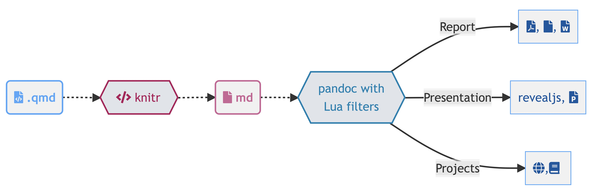

What is Quarto ?
Enhancing scientific publishing through Quarto
Posit
July 8, 2024
Preparation
Get ready!
Setting up your environment:
Download and install the latest versions of R, RStudio and Quarto:
A recent version of R (4.4 or higher)
The latest version of RStudio (
2024.04.2-764or higher)The latest version of Quarto
1.5available at https://quarto.org/docs/download/
Install the following packages:
Welcome
Information
- Information provided by useR’s organization
- Make sure you know where the emergency exits are!
- Toilets are located outside the lecture hall.
Code of Conduct
The Linux Foundation and its project communities are dedicated to providing a harassment-free experience for participants at all of our events, whether they are held in person or virtually.
Linux Foundation events are working conferences intended for professional networking and collaboration within the open source community. They exist to encourage the open exchange of ideas and expression and require an environment that recognizes the inherent worth of every person and group. While at Linux Foundation events or related ancillary or social events, any participants, including members, speakers, attendees, volunteers, sponsors, exhibitors, booth staff and anyone else, should not engage in harassment in any form.
Who am I ?
Christophe Dervieux
- Open-Source Software Engineer at Posit, PBC
- Working on R Markdown ecosystem
- Member of core dev team for Quarto project
Meet your neighbors
Take some time to see who can help you next to you!
To help you :
- Hello, my name is … and yours?
- How long have you known R / R Markdown?
- Have you ever used Quarto?
- If so, what was your latest project ?
01:00
How will this tutorial work?
Some part dedicated to slides presentations
Some live demos that you can try to follow on your own
Some do-it-yourself exercises
Getting help
During non-exercise parts, or during transitions - raise your hand
During the exercises – , but also use the stickers to signal you :
- Pink: I need help!
- Blue: I’m done!
I’m going to assume that you
know R Markdown with knitr and Markdown syntax,
have already worked with RStudio IDE,
want to know more about Quarto.
I’m going to teach you
Quarto syntax and formats,
Evolution compared to R Markdown,
How to go further with Quarto.
So, what is Quarto?
Quarto …
- is a new open-source scientific and technical publishing system, based on Pandoc,
- is designed and built on the +10 years of experience with R Markdown,
- requires no special technology to install and run.

Artwork from “Hello, Quarto” keynote by Julia Lowndes and Mine Çetinkaya-Rundel, presented at RStudio Conference 2022. Illustrated by Allison Horst.
Like R Markdown then?
- knitr -> 2011
- rmarkdown -> 2014

Like R Markdown then?
Yes - built on 10 years of knitr + rmarkdown -> Same principle…!
Like R Markdown then?
…but Quarto also opens up new horizons!

Quarto …
unifies + extends the R Markdown ecosystem
Quarto …
unifies + extends the R Markdown ecosystem
unifies for those who like R Markdown
Quarto …
unifies + extends the R Markdown ecosystem
unifies for those who like R Markdown
extends for people who don’t know R Markdown
Quarto unifies + extends R Markdown
- Consistent implementation of features for different output formats: tabsets, code-folding, syntax highlighting, etc.
- More accessible default values and improved accessibility support.
- Support for other languages such as Python, Julia, Observable, and more via the Jupyter engine for executable code chunks.
- New features for a better experience: YAML auto-completion, information on YAML syntax errors, etc.
unifies and extends the R Markdown ecosystem
The rmarkdown package and its ecosystem is still here
The R Markdown ecosystem continues to exist, and Quarto for R uses rmarkdown and knitr under the hood.
Illustrations by Alison Hill and Allison Horst, for RStudio.
How to use ?
Quarto is a command line interface (CLI) that renders plain text formats (.qmd, .rmd, .md) OR mixed formats (.ipynb/Jupyter notebook) into static PDF/Word/HTML reports, books, websites, presentations and more.
$ quarto --help
Usage: quarto
Version: 1.5.52
Description:
Quarto CLI
Options:
-h, --help - Show this help.
-V, --version - Show the version number for this program.
Commands:
render [input] [args...] - Render files or projects to various document types.
preview [file] [args...] - Render and preview a document or website project.
serve [input] - Serve a Shiny interactive document.
create [type] [commands...] - Create a Quarto project or extension
use <type> [target] - Automate document or project setup tasks.
add <extension> - Add an extension to this folder or project
update [target...] - Updates an extension or global dependency.
remove [target...] - Removes an extension.
convert <input> - Convert documents to alternate representations.
pandoc [args...] - Run the version of Pandoc embedded within Quarto.
typst [args...] - Run the version of Typst embedded within Quarto.
run [script] [args...] - Run a TypeScript, R, Python, or Lua script.
install [target...] - Installs a global dependency (TinyTex or Chromium).
uninstall [tool] - Removes an extension.
tools - Display the status of Quarto installed dependencies
publish [provider] [path] - Publish a document or project to a provider.
check [target] - Verify correct functioning of Quarto installation.
help [command] - Show this help or the help of a sub-command.Use your favorite tools


Several ways to Render
- In RStudio with as a background job, and preview the output.
- In the Terminal via
quarto render:
Overview of Quarto formats
One install, “Batteries included”
- RMarkdown grew into a large ecosystem, with varying syntax.
Quarto comes “batteries included” straight out of the box
- HTML reports and websites
- PDF reports
- MS Office (Word, Powerpoint)
- Presentations (Powerpoint, Beamer,
revealjs) - Books
- …
- Any language, exact same approach and syntax
Many Quarto formats
| Feature | R Markdown | Quarto |
|---|---|---|
| Basic Formats |
typst_document |
|
| Beamer | beamer_presentation | beamer |
| PowerPoint | powerpoint_presentation | pptx |
| HTML Slides | revealjs | |
| Advanced Layout | Quarto Article Layout |
Many Quarto formats
| Feature | R Markdown | Quarto |
|---|---|---|
| Cross References | Quarto Crossrefs | |
| Websites & Blogs | ||
| Books | bookdown | Quarto Books |
| Interactivity | Shiny Documents | Quarto Interactive Documents |
| Journal Articles | rticles | Journal Articles |
| Dashboards | flexdashboard | Quarto Dashboards |
Let’s try it!
05:00
To do together
- Open RStudio
- Move to a blank folder (or wherever you like)
- Create a new Quarto document - you can call it
simple-document.qmd. - Render the document
- Check source editor and visual editor
Tip
simple-document.qmd is available for download if required
Questions?
Let’s take a look at how to switch from Rmd to Quarto and produce documents…